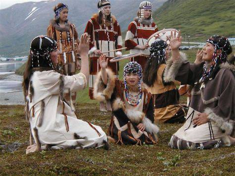
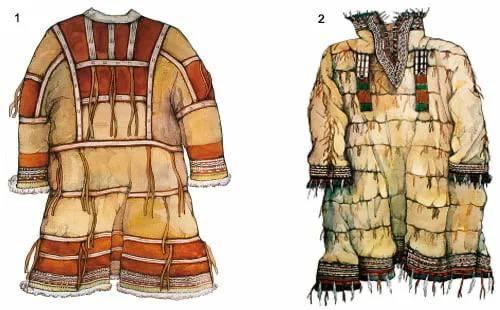

Культура
| Главная | История | Язык | Культура | Традиции | Религия | Об авторе | Источники | |
|
 Семья на Алеутских островах
 Одежда — камлейка |
Некоторые элементы культуры алеутов: Одежда — камлейка — глухая непромокаемая одежда из кишок морских животных с рукавами, глухим закрытым воротом и капюшоном. Обувь — торбаса — мягкие сапоги из кожи морских животных. Промысловый головной убор — деревянная шляпа конической формы с сильно удлинённой передней частью, украшенная полихромной росписью, резной костью, перьями, сивучьими усами. Традиционные занятия — охота на морского зверя (котика, сивуча, калана) и рыболовство. |